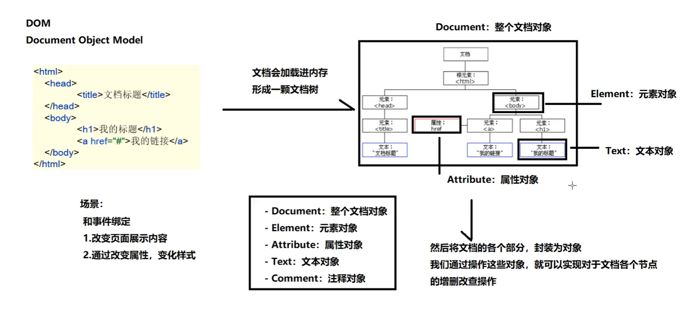

JS
- https://www.bilibili.com/video/BV1hP411679m/?p=10&spm_id_from=pageDriver&vd_source=1508b9a92b58beae7f2da553b09aff88
- 文档参考：https://developer.mozilla.org/zh-CN/docs/Web/JS
概述
JavaScript三大部分
- ECMA script基础语法
- DOM操作：文档操作，可以控制页面结构
- BOM操作：浏览器操作，可以控制浏览器行为
注释
- 单行注释
// 注释
- 多行注释
/*
多行注释
*/
引入JS
- 直接内部写
<script>
console.log("HELLO");
</script>
- 外部文件引入
<script src="js/test.js"></script>
变量
命名规则
- 只能使用数字、字母、下划线_、美元符$
- 不能以数字开头
- 严格区分大小写
- 使用驼峰命名
- 不可使用关键字为变量名
变量赋值
变量作用范围
局部变量：只有在函数内定义的才是局部变量，范围是函数内全局变量：除了函数内定义的，其他都是全局变量
function func() {
var a = 10;
}
// console.log(a); // a is not defined
if(false) {
var b = 20;
}
console.log(b); // undefined 申明了但是没有赋值
if(true) {
var c = 30;
}
console.log(c); // 30
while(false) {
var d = 40;
}
console.log(d); // undefined
for(var i=0; i<10; i++) {
}
console.log(i); // 10
先定义后赋值
var name;
var age, addr;
name = "张三";
age = 18;
addr = "北京市";
定义同时赋值
var name = "张三";
var age = 18, addr = "北京市";
数据类型
基本数据类型
undefined
- 只声明没有值的变量
var t;
console.log(t); // undefined
console.log(typeof t); // undefined
null
- 是object类型
var str1 = null;
console.log(str1); // null
console.log(typeof str1); // object
number
- 整型、浮点型、最大值、最小值、非数字NaN，都是number类型
var age = 18;
console.log(age); // 18
console.log(typeof age); // number
var price = 3.14;
console.log(price); // 3.14
console.log(typeof price); // number
var max = 1/0;
console.log(max); // Infinity
console.log(typeof max); // number
var min = -1/0;
console.log(min); // -Infinity
console.log(typeof min); // number
var parNum = parseInt("123abc456");
console.log(parNum); // 123
console.log(typeof parNum); // number
var parNum = parseInt("abc123");
console.log(parNum); // NaN
console.log(typeof parNum); // number
boolean
var t = true;
console.log(t); // true
console.log(typeof t); // true
var f = false;
console.log(f); // false
console.log(typeof t); // boolean
var res = 1 == true;
console.log(res); // true
console.log(typeof res); // boolean
string
- 字符串类型，单引号、双引号都是字符串
var str1 = "HELLO";
console.log(str1); // HELLO
console.log(typeof str1); // string
var str1 = 'HELLO';
console.log(str1); // HELLO
console.log(typeof str1); // string
强制转换
Number
- 将非数字转换为数字类型
number - 此方法要求比
parseInt("")严格，parseInt("")允许后面接非数字
var num = Number("123");
console.log(num); // 123
console.log(typeof num); // number
var num2 = Number("3.14");
console.log(num2); // 3.14
console.log(typeof num2); // number
var num3 = Number("123a");
console.log(num3); // NaN
console.log(typeof num3); // number
Boolean
- 将其他值转为布尔类型
boolean
console.log(Boolean(0)); // false
console.log(Boolean(-0)); // false
console.log(Boolean(null)); // false
console.log(Boolean(undefined)); // false
console.log(Boolean(NaN)); // false
console.log(Boolean(false)); // false
console.log(Boolean("")); // false
console.log(Boolean(1)); // true
console.log(Boolean(3.14)); // true
console.log(Boolean("abc")); // true
String
- 将其他数据类型转为字符串类型
string
console.log(String(false)); // false
console.log(String(true)); // true
console.log(String(undefined)); // undefined
console.log(String(null)); // null
console.log(String(NaN)); // NaN
console.log(String(123)); // 123
console.log(String(3.14)); // 3.14
parseInt/parseFloat
- 比Number更强大的数字转换，适应更多场景
console.log(parseInt("123")); // 123
console.log(parseInt("123abcd456")); // 123
console.log(parseInt("a123")); // NaN
console.log(parseInt(" 123 456")); // 123
隐式转换
+加号一侧有string，结果转为string
var num = 123;
var res = num + "999";
console.log(res); // 123999
console.log(typeof res); // string
res = num - "999";
console.log(res); // -876
console.log(typeof res); // number
+加号一侧有number，另一侧是基本数据类型，会转换成number。有意义值转为1，无意义值转为0- 注意：NaN和undefined结果是NaN
var num = 123;
var res = num + true;
console.log(res); // 124
console.log(typeof res); // number
res = num + "";
console.log(res); // 123
console.log(typeof res); // number
res = num + null;
console.log(res); // 123
console.log(typeof res); // number
res = num + NaN;
console.log(res); // NaN
console.log(typeof res); // number
res = num + undefined
console.log(res); // NaN
console.log(typeof res); // number
逻辑判断时，null、undefined、NaN、空白字符串都是false，其他是true==时NaN和其他类型比较，结果永远是false==时string和number比较，先将string转为number==时null和undefined比较，是true；除此之外，这两个与其他比较，结果都是false
console.log(NaN > 10); // false
console.log(!NaN); // true
引用数据类型
运算符
算术运算符
+ - * / % 加减乘除取余
js中，两个整数运算可以得出小数结果（Java中则得出整数结果）
console.log(1 + 2); // 3
console.log(1 - 2); // -1
console.log(1 * 2); // 2
console.log(1 / 2); // 0.5
console.log(1 % 2); // 1
++ -- 自增自减
前自增/自减先自增，在运算
后自增/自减先运算，再自增
var a = 1;
console.log(1 + a++); // 2
console.log(a); // 2
console.log(1 + ++a); // 4
赋值运算符
= 赋值
var a = 1;
var b = 2;
console.log(a + b); // 3
+= -= *= /= %= 先运算再赋值
var a = 1;
var b = 2;
a += b;
console.log(a); // 3
a -= b;
console.log(a); // 1
a *= b;
console.log(a); // 2
a /= b;
console.log(a); // 1
a %= b;
console.log(a); // 1
条件运算符
-
> >= < <= 大于小于 -
!= 不等于 -
== 值相等
console.log(1 == true); // true
console.log("" == false); // true
console.log(" " == false); // true
console.log(5 == "5"); // true
=== 值、类型相等
console.log(1 === true); // false
console.log("" === false); // false
console.log(" " === false); // false
console.log(5 === "5"); // false
console.log(true === true); // true
字符串运算符
+ += 拼接
逻辑运算符
-
&& 与
两个都是true，得true；个别为false，得false -
|| 或
其中之一为true，的true -
! 非
三元运算符
条件 ? true值 : false值
逻辑语句
if
// 1
if(true / false) {
}
// 2
if() {
} else {
}
// 3
if() {
} else if() {
} else {
}
switch
switch(判断值) {
case 1:
break;
case 2:
break;
default:
}
for
for(var i = 0; i<10; i++) {
console.log(i);
}
while
while() {
}
do while
- 至少执行一次
do {
} while();
函数
定义函数
方法1
function add(a, b) {
return a + b;
}
console.log(add(1,2)); // 3
方法2
var fun1 = function (a, b) {
return a + b;
}
console.log(fun1(1,2)); // 3
arguments
arguments封装了实参- 形参没有接受到的参数，可以通过arguments获取到
function func(a, b) {
console.log(a); // 1
console.log(b); // 2
console.log(arguments.length); // 4
console.log(arguments[0]); // 1
console.log(arguments[1]); // 2
console.log(arguments[2]); // 3
console.log(arguments[3]); // 4
}
func(1,2,3,4);
对象
https://www.w3school.com.cn/jsref/index.asp
- 有
JavaScript对象、HTML DOM对象、Web API对象、HTML Element对象等类型的对象 - 每种对象都有对应的一些API可供使用
字符串对象
charAt(), indexOf()....
数组对象
https://www.w3school.com.cn/jsref/jsref_obj_array.asp
- 与其他类型不同，创建数组后，还可以增删元素，不是限制死的容量！
- 数组对象是
object类型
创建数组
var a1 = [];
a1.push(1);
console.log(a1); // [1]
var a2 = [1,2,3];
console.log(a2); // [1, 2, 3]
var a3 = new Array();
console.log(a3); // []
var a4 = new Array(10);
console.log(a4); // [undefined ×10]
console.log(a4.length); // 10
var a5 = new Array(1,2,3,4);
console.log(a5); // [1, 2, 3, 4]
调整长度
var a1 = [1,2,3,4,5];
console.log(a1.length); // 5
a1.length = 3;
console.log(a1); // [1, 2, 3]
console.log(a1.length); // 3
a1.length = 10;
console.log(a1); // [1, 2, 3, undefined ×7]
console.log(a1.length); // 10
访问元素
var a1 = [1,2,3,4,5];
console.log(a1[0]); // 1
console.log(a1[10]); // undefined
a1[10] = 100
console.log(a1[10]); // 100
console.log(a1); // [1, 2, 3, 4, 5, undefined ×5, 100]
常用方法
Math对象
https://www.w3school.com.cn/jsref/jsref_obj_math.asp
Math是一个object，封装了很多数学方法- 对象封装有
属性是各种数学常用值
Date对象
https://www.w3school.com.cn/jsref/jsref_obj_date.asp
正则对象
创建正则对象
var reg = /正则表达式/;var reg = new RegExp("正则表达式");
var reg = /^\w{6,12}$/; // 匹配英文字母或者数字，至少6个只多12个
var str = "abc1234";
var flag = reg.test(str); // true
自定义对象
创建对象
方式1
var obj = new Object();
obj.name = "张三";
obj.show = function() {
alert("我的名字是：" + this.name);
}
alert(obj.name);
obj.show();
方式2
var obj = {
name: "张三",
show: () => {
alert("我的名字是：" + this.name)
},
setName: (name1) => {
this.name = name1;
}
}
alert(obj.name);
obj.setName("李四")
obj.show();
方法3
- 用构造函数创建对象
function User(name, age) {
this.name = name;
this.age = age;
this.show = () => {
alert('姓名：' + this.name + " 年龄：" + this.age)
}
}
var u = new User("张三", 18)
u.show()
原型
- 每一个对象都有原型，他可以使用原型中的属性和方法
- 通过
对象.__proto__获取原型对象
let stu = {
name: '张三'
}
// 为原型添加eat函数
stu.__proto__.eat = () => {
alert("吃饭");
}
stu.eat()
原型继承
- 所有引用数据类型，都有一个最终的
Object - 原型继承，就是将另一个原型的东西，绑定到本原型，有父子关系
- 调用属性和方法时，会一层一层找
function Person(name, age) {
this.name = name;
this.age = age;
// this.eat = () => {
// alert("Person 吃饭");
// }
}
function Student(score) {
this.score = score
}
Object.prototype.eat = () => {
alert("Object 吃饭");
}
// 将Student的原型，继承Peron
Student.prototype = new Person("张三", 18);
var stu = new Student(100);
alert(stu.name) // 张三
alert(stu.score) // 100
stu.eat(); // Object 吃饭
DOM
- Document Object Model文档对象模型
- 浏览器会将HTML代码，写进内存，形成一颗文档树
Document对象 - 入口是
document.
<html>
<head>
<title>标题</title>
</head>
<body>
<h1>标题</h1>
<a href="">链接</a>
</body>
</html>

Document文档对象
- 文档对象包括整个HTML文档，可以通过Document对象获取到网页内的元素
getElementById通过id获取
- 得到1个元素对象
<div id="aaa">AAA</div>
<script>
var aaaEle = document.getElementById('aaa')
console.log(aaaEle); // <div id="aaa">AAA</div>
</script>
getElementsByTagName通过标签名称
- 获取所有该名称的标签元素对象
<div id="aaa">AAA</div>
<div>BBB</div>
<div>CCC</div>
<script>
var aaaEle = document.getElementsByTagName('div')
console.log(aaaEle);
/*
[
<div id="aaa">AAA</div>,
<div>BBB</div>,
<div>CCC</div>
]
*/
</script>
getElementsByClassName通过类获取
- 获取所有该class的元素
<div id="aaa">AAA</div>
<div class="bbb">BBB</div>
<div>CCC</div>
<script>
var aaaEle = document.getElementsByClassName('bbb')
console.log(aaaEle);
/*
[
<div class="bbb">BBB</div>
]
*/
</script>
getElementsByName通过name获取
- 获取所有name为指定的元素对象
<input type="checkbox" name="hobby" value="1">
<input type="checkbox" name="hobby" value="2">
<input type="checkbox" name="hobby" value="3">
<script>
var aaaEle = document.getElementsByName('hobby')
console.log(aaaEle);
/*
[
<input type="checkbox" name="hobby" value="1">,
<input type="checkbox" name="hobby" value="2">,
<input type="checkbox" name="hobby" value="3">
]
*/
</script>
Element元素对象
- 标签对应的元素对象
innerHTML获取元素HTML内容
- 返回元素内包裹的所有HTML内容
string - 可以修改该属性，实现元素内容更改
<div id="a1">
<span id="b1">1</span>
<span id="b2">2</span>
</div>
<script>
var ele = document.getElementById("a1")
var inn = ele.innerHTML
console.log(inn);
/*
<span id="b1">1</span>
<span id="b2">2</span>
*/
ele.innerHTML = "<p>HELLO</p>"
inn = ele.innerHTML
console.log(inn);
/*
<p>HELLO</p>
*/
</script>
innerText获取元素显示内容
- 只获取显示出来的内容，不获取HTML结构
string - 也可以通过该属性修改这个元素的内容，但是不能修改HTML结构，只会以文字的形式出现
<div id="a1">
<span id="b1">1</span>
<span id="b2">2</span>
</div>
<script>
var ele = document.getElementById("a1")
var inn = ele.innerText
console.log(inn);
/*
1 2
*/
ele.innerText = "<p>HELLO</p>"
inn = ele.innerText
console.log(inn);
/*
实际显示是：<p>HELLO</p>
*/
</script>
children元素所有子结点
- 获取元素所有的子结点元素对象
<div id="a1">
<span id="b1">1</span>
<span id="b2">2</span>
</div>
<script>
var ele = document.getElementById("a1")
var cs = ele.children
console.log(cs);
/*
[
<span id="b1">1</span>
<span id="b2">2</span>
]
*/
</script>
parentNode获取父节点
- 获取该元素的父节点元素对象
<div id="a1">
<span id="b1">1</span>
<span id="b2">2</span>
</div>
<script>
var ele = document.getElementById("b1")
var cs = ele.parentNode
console.log(cs);
/*
<div id="a1">
<span id="b1">1</span>
<span id="b2">2</span>
</div>
*/
</script>
createElement创建元素对象
- 创建了元素对象，但是还没有插入文档，可以操作该对象属性、内容等
appendChild追加元素
- 将一个元素对象，追加到另一个元素内部的最后
insertBefore插入元素
- 将一个元素，插入到另一个元素之前
<div id="a1">
<span id="b1">1</span>
<span id="b2">2</span>
</div>
<script>
var p = document.createElement("p") // 创建一个<p>标签
p.innerText = "HELLO" // 设置标签内容
// 1、追加方式
var parent = document.getElementById("a1")
parent.appendChild(p) // 将p元素追加到parent元素内
// 2、指定位置方式
var b1 = document.getElementById("b1")
parent.insertBefore(p, b1) // 将p插入到b1前面
</script>
removeChild删除元素
- 通过父元素删除子元素
<div id="a1">
<span id="b1">1</span>
<span id="b2">2</span>
</div>
<script>
var b1 = document.getElementById("b1")
var parent = b1.parentNode
parent.removeChild(b1)
</script>
Attribute元素的属性对象
- 通过Element对象可以获取到其属性
hasAttribute是否存在属性
- 判断该属性是否存在于该元素
<div id="a1" class="abc" name="aaa"></div>
<script>
var ele = document.getElementById("a1") // 先拿到Element对象
var flag = ele.hasAttribute("class")
console.log(flag); // true
flag = ele.hasAttribute("name")
console.log(flag); // true
flag = ele.hasAttribute("style")
console.log(flag); // false
</script>
getAttribute获取属性值
- 通过属性名获取属性值
<div id="a1" class="abc def hig" name="aaa"></div>
<script>
var ele = document.getElementById("a1")
var classes = ele.getAttribute("class")
console.log(classes); // abc def hig
</script>
setAttribute设置属性
- 当元素没有该属性时，则添加该属性；当元素有该属性，则重置为指定值
<div id="a1" class="abc def hig" name="aaa"></div>
<script>
var ele = document.getElementById("a1")
var classes = ele.getAttribute("class")
console.log(classes); // abc def hig
ele.setAttribute("class", "qwe") // 重置属性为qwe
classes = ele.getAttribute("class")
console.log(classes); // qwe
</script>
removeAttribute移除属性
<div id="a1" class="abc def hig" name="aaa"></div>
<script>
var ele = document.getElementById("a1")
var classes = ele.getAttribute("class")
console.log(classes); // abc def hig
ele.removeAttribute("class")
classes = ele.getAttribute("class")
console.log(classes); // null
</script>
Event元素事件
https://www.w3school.com.cn/jsref/dom_obj_event.asp
onclick单击事件
- 方式1：直接在元素的属性上写函数名称
- 方式2：通过js后绑定事件方法
<script>
function func() {
document.getElementById("h").innerText = "HELLO"
}
</script>
<h1 id="h">你好</h1>
<!-- 方式1 -->
<button onclick="func()">点击事件</button>
<script>
// 方式2
var h = document.getElementById("h")
h.onclick = () => {
alert("你好")
}
</script>
onfocus获得焦点事件
onblur失去焦点事件
<input type="text" name="username" id="username">
<span id="info"></span>
<script>
var text = document.getElementById("username")
// 绑定获取焦点事件
text.onfocus = () => {
document.getElementById("info").innerText = "请输入6-12位英文或数字"
}
// 绑定失去焦点事件
text.onblur = () => {
var value = text.value
var pattern = /^\w{6,12}$/;
var res = pattern.test(value)
if(res) {
document.getElementById("info").innerText = "验证通过"
} else {
document.getElementById("info").innerText = "验证不通过"
}
}
</script>
onchange内容改变事件
<input type="password" name="username" id="username">
<span id="info"></span>
<script>
var text = document.getElementById("username")
text.onchange = () => {
document.getElementById("info").innerText = text.value
}
</script>
onmouseover鼠标移入事件
onmouseout鼠标移出事件
<div id="pad" style="height: 100px;width: 100px;border: 1px solid black;">
<span id="info"></span>
</div>
<script>
var pad = document.getElementById("pad")
// 鼠标移入事件
pad.onmouseover = () => {
document.getElementById("info").innerText = "鼠标移入"
}
// 鼠标移出事件
pad.onmouseout = () => {
document.getElementById("info").innerText = "鼠标移出"
}
</script>
BOM

- 是js与浏览器沟通的对象
- 入口是
window.
window对象
https://www.w3school.com.cn/jsref/obj_window.asp
- 浏览器提供的对象
alert警告框
- 可以省略
window对象
window.alert("你好");
alert("你好");
prompt询问框
var passwd = window.prompt('支付密码')
passwd = prompt('支付密码')
console.log(passwd);
confirm确认框
var choose = window.confirm("是否支付？")
if(choose) {
alert("支付成功")
} else {
alert("支付失败")
}
setInterval循环定时器
function func1() {
alert("执行一次")
}
window.setInterval(func1, 2000); // 两秒执行一次
// 也可以放箭头函数
setInterval(()=>{
alert("执行一次")
}, 2000)
setTimeout延迟定时器
- 只执行一次
function func1() {
alert("执行一次")
}
window.setTimeout(func1, 2000); // 两秒执行一次
// 也可以放箭头函数
setTimeout(()=>{
alert("执行一次")
}, 2000)
window.onload页面加载完毕时间
- 页面加载完毕时，触发的事件
window.onload = () => {
alert("页面加载完毕")
}
window.location对象
https://www.w3school.com.cn/jsref/obj_location.asp
- 有关URL地址栏的对象
href页面地址
window.location.href = "https://www.baidu.com"
// window可以省略
location.href = "https://www.baidu.com"
window.history对象
- 控制页面前进和后退
forward前进
- 与浏览器点击前进按钮功能一样
window.history.forward()
history.forward()
back后退
- 与浏览器点击后退按钮功能一样
window.history.back()
history.back()
ES6新语法
let
- let不可重复声明变量，var允许重复
var a = 1
var a = 2
let b = 1
// let b = 2
- let出了
{}代码块就不能使用；var只有函数内和函数外之分
if(true) {
var a = 10
let b = 10
}
console.log(a);
// console.log(b);
- let使用还没定义的变量，会报错；var使用会时undefined
console.log(a);
// console.log(b);
var a = 10
let b = 20
const
- const修饰基本数据类型：无法修改值
const a = 10
// a = 20
- const修饰引用数据类型：无法更改引用，但是可以修改内部值
const arr = [1,2,3]
// arr = [4,5,6]
arr[0] = 100